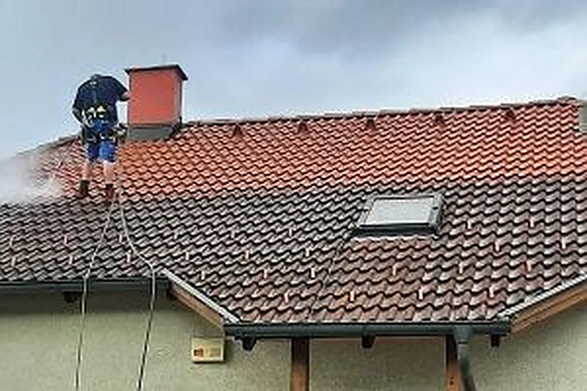

À propos
Un artisan couvreur installé à Courlaoux depuis 2009
Couverture, étanchéité et zinguerie à Courlaoux, dans le Jura. Joignable du lundi au vendredi, de 7 h 30 à 20 h 30.
La passion du bâtiment, au service de votre toit
Notre entreprise, située à Courlaoux dans le Jura, œuvre dans le domaine de la couverture, de l’étanchéité et de la zinguerie.
Elle a été fondée en 2009 par Anthony Gand, qui a souhaité transmettre sa passion du métier du bâtiment et son goût pour la création et la conception de vos travaux.
Qualifié pour la pose des gouttières en zinc, en cuivre ou en PVC selon vos besoins. Vous pouvez aussi faire appel à nos services pour améliorer l’étanchéité et l’isolation de votre toiture.

Devis gratuit et détaillé
Faites le point sur votre toit, sans frais
Solliciter nos services, c’est la garantie d’avoir une toiture étanche pour les années à venir. Obtenez un devis gratuit et détaillé.